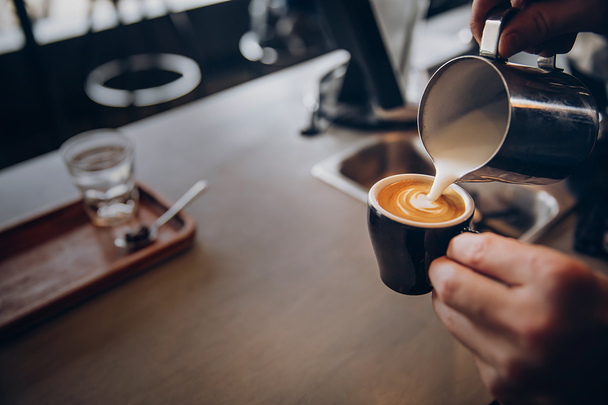
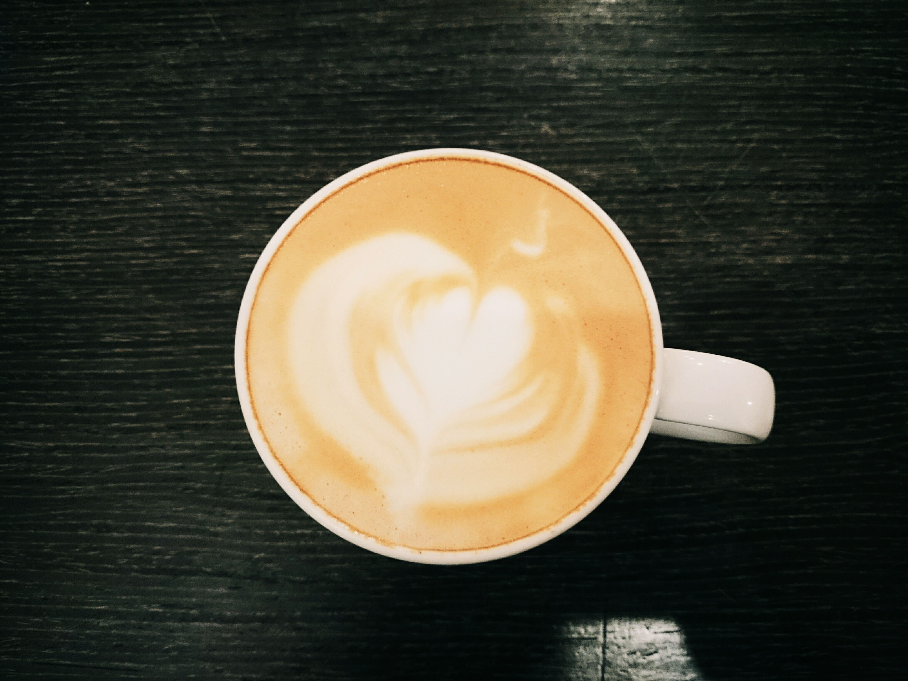
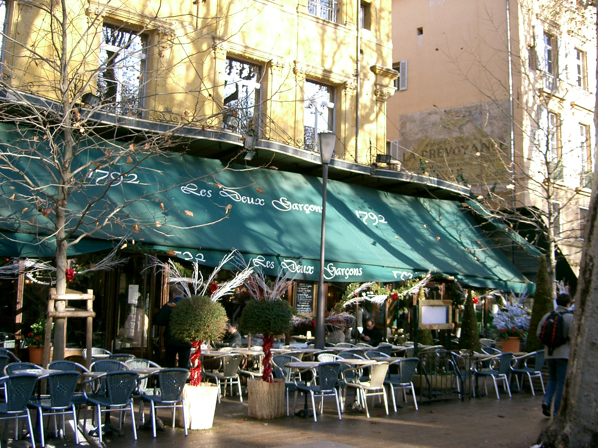

Coffee
Posted, July 1, 2018
Coffee is a brewed drink prepared from roasted coffee beans, which are the seeds of berries from the Coffea plant.
Coffee is slightly acidic and has a stimulating effect in humans. Coffee is one of the most popular drinks in the world. It can be prepared and presented in a variety of ways (e.g., espresso, French press, café latte, etc.). It is usually served hot, although iced coffee is a popular alternative.

How people drink their coffee?
- Black coffee is coffee with no milk in it.
- White coffee is coffee with milk in it.
- Café au lait is coffee made with a lot of hot milk. It is often sweet.
- Espresso is very strong coffee. In Australia, it is often called a "short black".
- Cappuccino is espresso with frothed milk (milk mixed with air). A well-made cappuccino should be made of strong coffee. When the frothy milk is poured gently into the coffee cup, it should be white on top and have a ring of darker coffee around the edge. Cappuccino coffee sometimes has cocoa sprinkled on top.
- Latte is made like a cappuccino but with added milk and a very thin layer of foam.
- Flat white is a double espresso where milk micro foam is added to the crema (an emulsion of the oils in the coffee beans when combined with hot water that floats) on the double espresso.
- Americano is espresso with a lot of hot water.
- Irish coffee is coffee with whiskey and with cream on the top. Iced coffee is espresso in a tall glass with crushed ice, cold milk and ice cream.
- Vietnamese style coffee (Cafe Sua Da) is filtered coffee poured over ice into a glass with sweet condensed milk (thick milk which has had the water removed).
- Baby-cino is a small hot milk drink suitable for children.

A cup Cappuccino at Lumos Coffee
Instant coffee
"Instant coffee" is a very quick way to make a cup of coffee to drink. It is made in a factory and sold in jars or packets. First, strong coffee is made using ground coffee and boiling water. Then, the coffee grounds are filtered out. The coffee liquid is dried out until nothing is left except granules (little crunchy pieces), or fine powder. This is then put into jars or packets.
As soon as a spoonful of "instant coffee" is added to boiling water, it dissolves in the water to make coffee to drink. The taste can be very different from fresh coffee. Part of the reason for the different taste is that Robusta coffee beans are usually used for making instant coffee. Robusta coffee beans do not cost as much as Arabica.

A coffee shop in France (Wikipedia)
{kind=link}